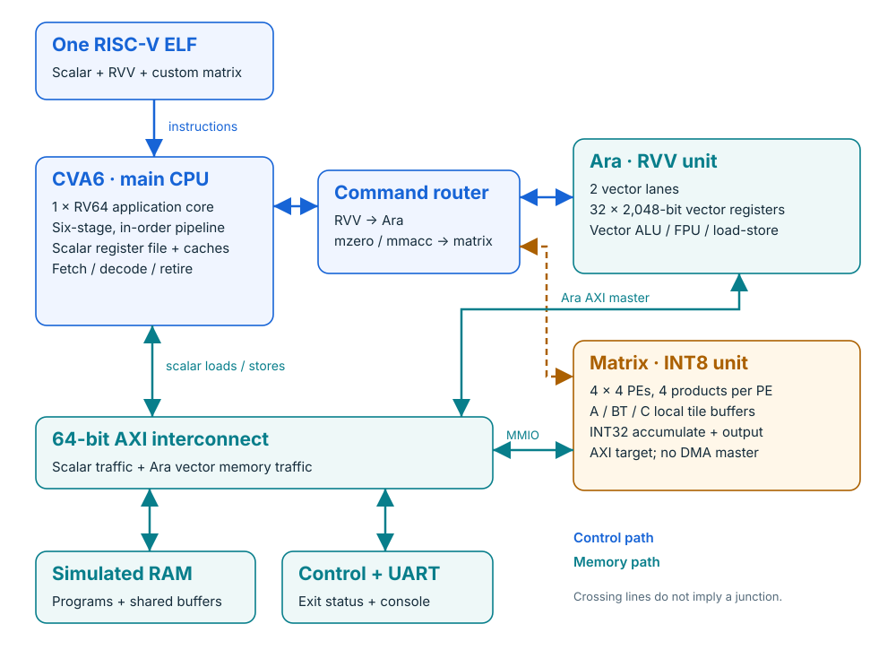

64-bit RISC-V core
Fetches instructions, executes scalar C and retires all instructions in order.
Explore the block →An open hardware foundation for Cerebral Chips: one RISC-V CPU, two vector lanes, and an INT8 matrix engine working under one program.
Our first working hardware foundation. One bare-metal program executes scalar, vector and custom matrix instructions on real scalar + vector + matrix RTL. “Proton NPU” is the project name; the current architecture is a single-core RISC-V system with attached vector and matrix execution units.

Optional programmable DMA. A separate AXI master moves data between SRAM and DDR, with a transpose flag, programmable row strides and 8/16/32/64-bit elements. The CPU programs and polls registers at 0xe0001000. DMA is not cache coherent: the qualified bare-metal test disables the data cache and uses fences around transfers. Proton SDK DMA scheduling is not yet integrated. DMA design and verification →
Fetches instructions, executes scalar C and retires all instructions in order.
Explore the block →Executes RVV operations across two lanes and accesses shared RAM through AXI.
Explore the block →Computes signed INT8 tiled products using sixteen packed-dot-product PEs.
Explore the block →Optional SRAM + DDR target. Keep programs and working buffers in 16 MiB SRAM at 0x80000000, with a separate 4 GiB external-memory region at 0x100000000. The Verilator target supports CPU/vector accesses, high-address ELF loading, configurable delays and checked memory tests. This is a functional memory model; an FPGA or ASIC still needs a DDR controller and PHY. Memory map, commands and limits ↗. IREE model deployment and packed-weight placement are maintained in Proton SDK ↗.
mzero and mmacc.| Property | Current implementation |
|---|---|
| PE arithmetic | 262,144 signed-byte / lane checks |
| Tile arithmetic | 256 directed and randomized tile cases |
| Combined program | 8 workloads; 115,650 simulated cycles |
| Execution evidence | 69,007 scalar + 64 RVV + 52 mzero + 34 mmacc retired |
| Waveform arithmetic | All 86 matrix command results checked from actual RTL FST |
| Regression | 9/9 scalar/vector tests with matrix on; 9/9 with matrix off |
| Failure handling | Injected wrong result and forced timeout rejected |
This is a recorded functional milestone. A simulation cycle is not a measured chip clock frequency, and these tests do not establish full ISA conformance or application throughput. See the committed verification summary for source and artifact hashes.
git clone --branch hardware https://github.com/cerebralchips/proton-npu.git
cd proton-npu
./scripts/ara vm-start # Apple Silicon
./scripts/ara provision
./scripts/ara doctor
./scripts/ara matrix
./scripts/ara matrix-wave